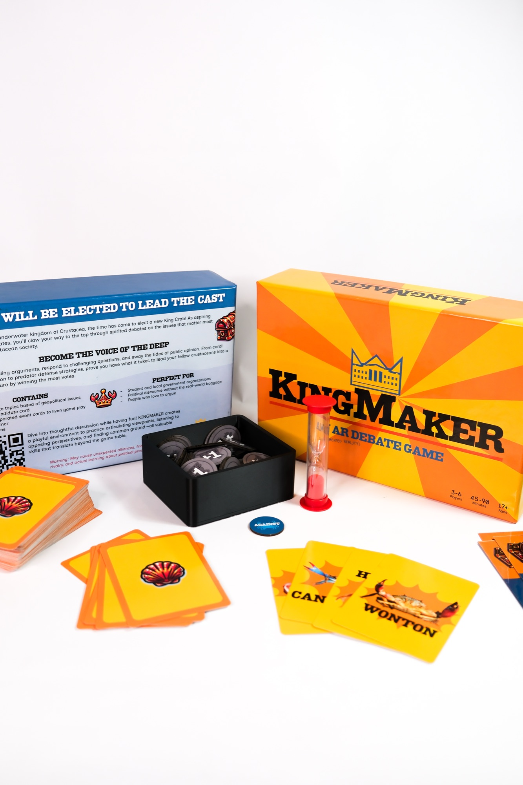
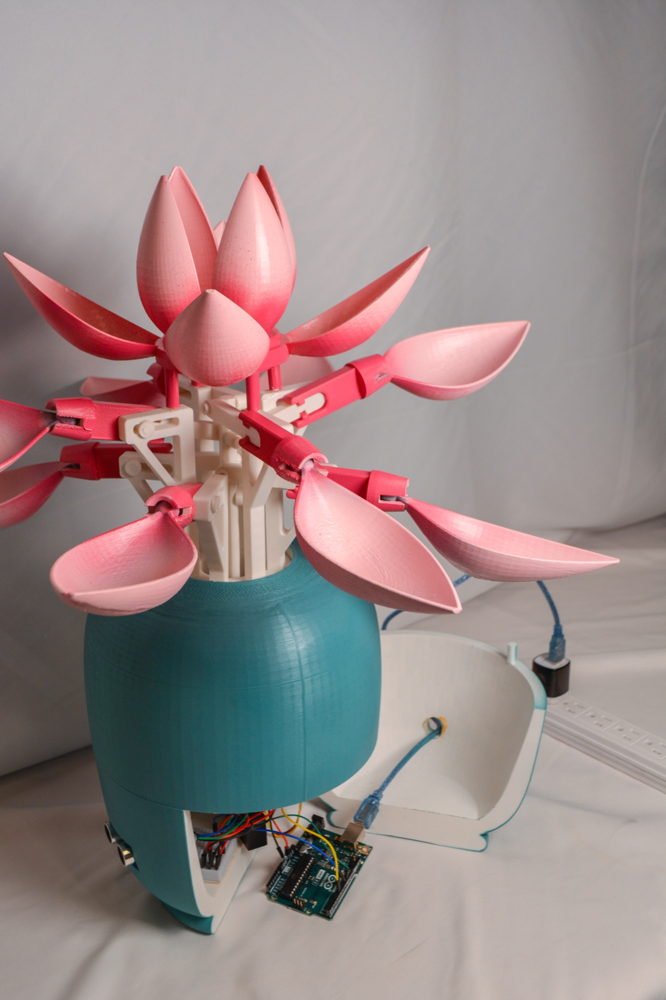

PROJECTS

01 KingMaker
Kingmaker was my senior capstone project for my last semester at CU Boulder's B.S. in Creative Technology and Design. Working with Ethan Cuenca as my partner we created a table top game with the goal of encouraging civic discussion between high school to early 20s players.

02 Band Merch
Band merch has always been a space for visual and musical artists to collaborate. With so many local artists in my area I have had the privilege of designing, hand carving and printing multiple merch lines to be distributed commercially.

03 Lotus Installation
Utilizing my knowledge of 3D modeling, printing, and Arduino circuitry I created an interactive art installation for the ATLAS EXPO '25. Inspired by lotus flowers, guests would approach the flower's proximity sensor causing the 3D modeled piston system to open the flowers pedals.